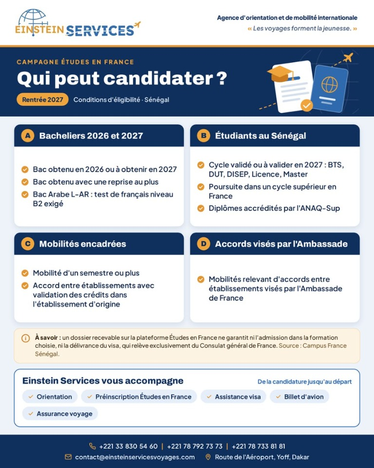
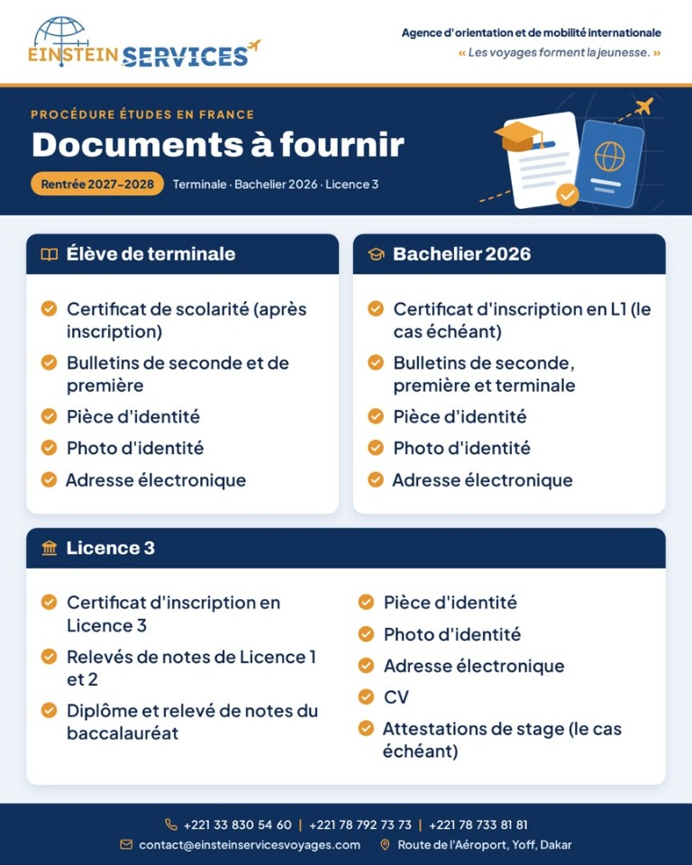
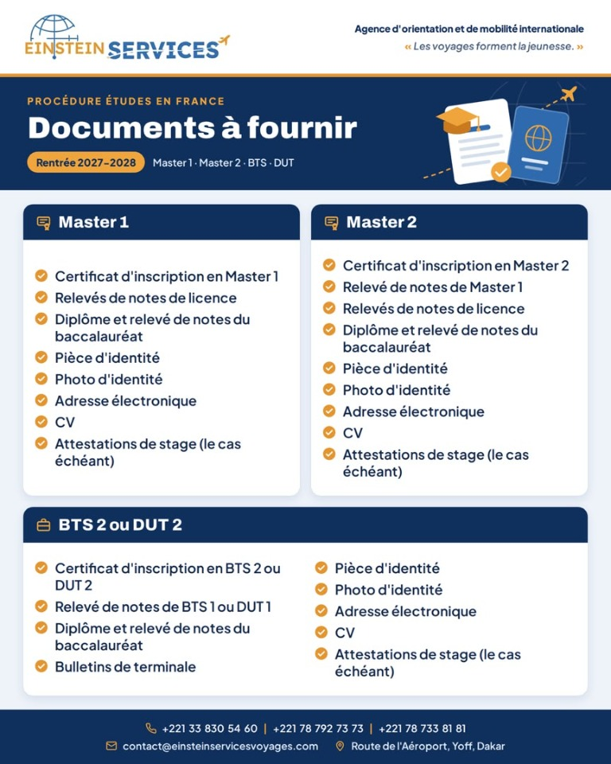

Service
Préinscriptions et admissions
Accompagnement des candidatures via Parcoursup, Campus France (« Études en France ») et directement auprès des établissements.
Chargement des détails du service…
Étudier en France : ressources pour la rentrée 2027–2028
Informations destinées aux candidats depuis le Sénégal. Consultez ou téléchargez les visuels pour connaître les critères d'éligibilité et les documents à préparer.


Documents à fournir : terminale, bac 2026 et licence 3
Télécharger le visuel
